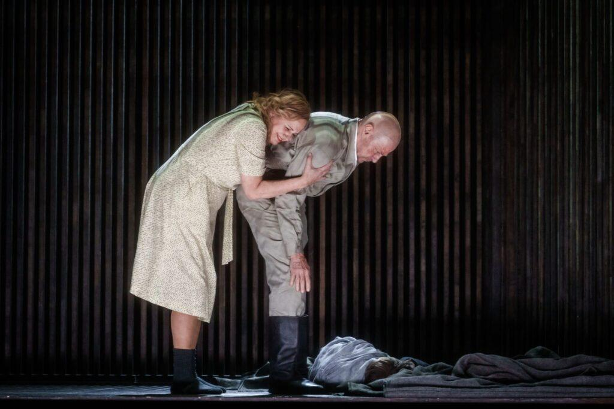
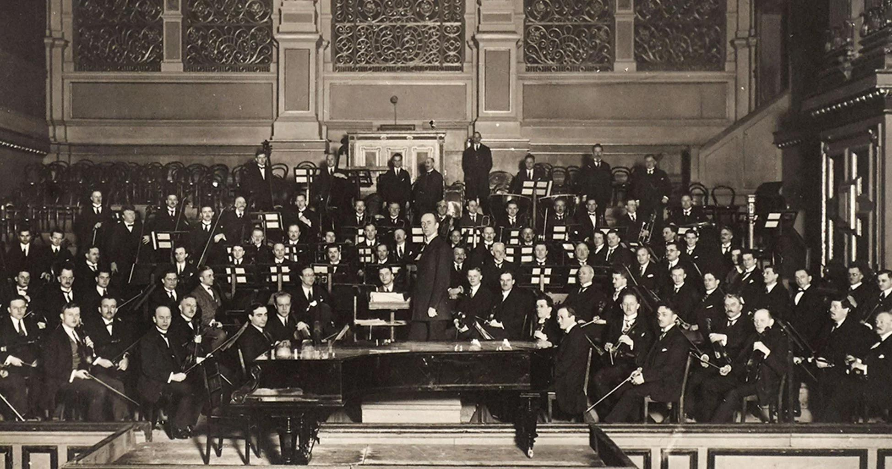
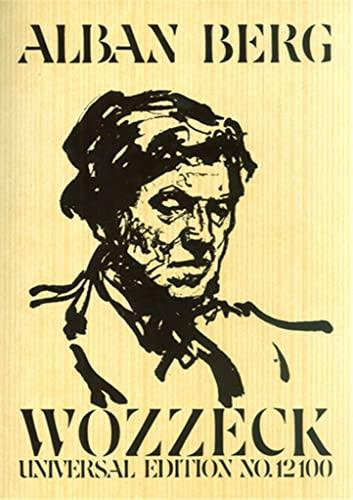
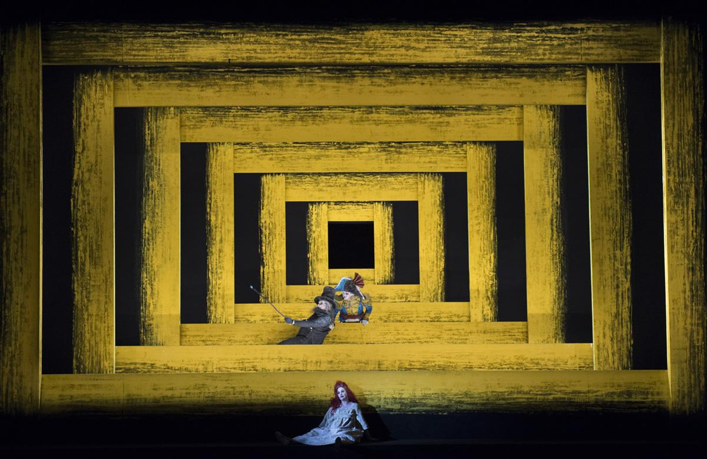
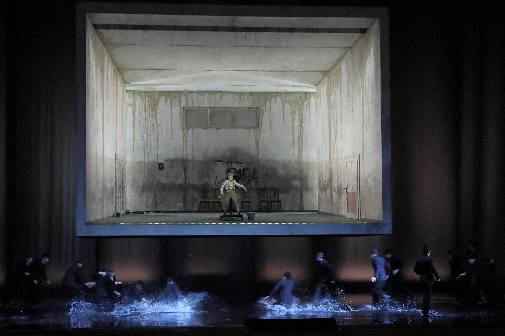

Example 3 — Premiere of Wozzeck
(Assuming you meant Wozzeck—if you meant something else, tell me.)
The audience is restless before it even begins.
You can feel it—the uncertainty. This isn’t Richard Wagner, not the grand mythic comfort people expect. Word has spread: this music is different.
When the orchestra starts, it doesn’t flow—it fractures.
Alban Berg builds something uneasy, almost claustrophobic. No clear melodies to hold onto. Just tension.
On stage, the story is brutal: poverty, humiliation, madness. No heroes. No relief.
Some people lean forward, captivated. Others shift, irritated. A few quietly leave.
By the end, the applause is real—but so are the arguments already forming in the aisles.
You realize you’ve witnessed something new: not just an opera, but a break from the past. Music that refuses comfort.